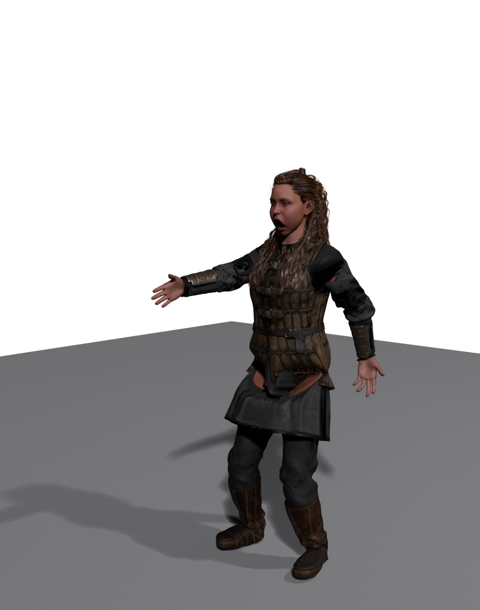

🧍 Characters & Animation
Everything you built in the introductory modules stood still. A wall does not walk, a lamp does not wave. To put a character on screen, one that moves and can be animated, you need a different kind of asset: the Skeletal Mesh. This lesson is the bridge from the static world you know into moving characters. You will meet the Skeleton and its bones, learn how sockets attach props to a hand, see how Animation Sequences and Anim Blueprints drive motion, and finish with the single most useful idea in production animation: retargeting, which lets one library of animation drive many different characters.
🎬 Intermediate Track
This is the first lesson of the Cinematic Production track. It assumes you have finished the introductory modules, so it moves faster and leans on ideas you already have: assets and the Content Browser (Module 2), materials (Module 3), and Blueprints (Module 5). It also fills in the exact animation topics the Production Pipeline pages point to as "beyond the intro course."
🎯 Learning Objectives
By the end of this lesson, you will be able to:
- Explain how a Skeletal Mesh differs from a Static Mesh: mesh, Skeleton, and skin weights
- Read a bone hierarchy and understand why one canonical Skeleton is shared across a cast
- Add a socket to a bone and use it as a consistent attach point for props and effects
- Describe how Animation Sequences and Anim Blueprints turn bone data into motion
- Explain why animation must be retargeted between different skeletons, and how the IK Rig and IK Retargeter do it
Estimated Time: 35-45 minutes
Prerequisites: The introductory modules, especially 2.4 Static Meshes and Assets and Module 5 Blueprints. A working Unreal Engine 5.8 project.
In This Lesson
From Static Mesh to Skeletal Mesh
A Static Mesh is a single rigid shape. You can move, rotate, and scale the whole thing as one piece, but you cannot bend it. That is perfect for a crate, a wall, or a rock, and it is most of what fills a level. A character is different. An arm has to swing while the torso stays put; fingers curl independently of the wrist. For that you need a mesh whose parts can move relative to each other, and that is exactly what a Skeletal Mesh is.
📖 Definition
Skeletal Mesh: a mesh that is deformed by an internal Skeleton of bones. Three things travel together: the mesh (the visible surface), the Skeleton (a hierarchy of bones), and the skin weights (which record how much each bone pulls on each vertex). Move a bone and the skin follows.
Think of it the way your own body works. Your skeleton is a frame of bones connected at joints. Your skin is painted onto that frame so that when your elbow bends, the skin of your forearm comes along for the ride. A Skeletal Mesh is the same arrangement, built for a computer: bones you can rotate, and a surface weighted to follow them.
Where characters come from
Most characters are not modeled inside Unreal. They are built in a dedicated character tool and imported. In a full Story-to-Screen pipeline, a figure is assembled in Daz Studio, cleaned up and rigged in Blender, and then handed to Unreal as a Skeletal Mesh. The character below, "Kat," is a real Daz Genesis figure sitting in Blender, fully textured and posed, one export away from becoming an Unreal Skeletal Mesh.

Figure: "Kat for Genesis 9," a finished Daz character in Blender, textured and posed. This is the upstream end of the pipeline · the same figure becomes a Skeletal Mesh once it is exported into Unreal.
The moment that character arrives in Unreal it becomes three linked assets: a Skeletal Mesh, a Skeleton it is bound to, and usually a Physics Asset for collision. The import itself is the same FBX workflow you already used for static meshes in Lesson 2.4, with one crucial difference: you import it as a Skeletal Mesh, which tells Unreal to keep the bones and skin weights instead of flattening everything into one rigid shape.
💡 The whole pipeline at a glance
flowchart LR
A[Daz Studio
assemble figure] --> B[Blender
clean, shade, rig]
B --> C[Unreal
Skeletal Mesh
+ Skeleton]
C --> D[Add sockets
attach props]
C --> E[Play & retarget
animation]
E --> F[Sequencer
& render]
style C fill:#e8f5e9,stroke:#4CAF50
This lesson lives at the green step: turning the imported character into something riggable and animatable. The pipeline pages for Phase 2 and Phase 4 map the same territory at production scale.
The Skeleton and Its Bone Hierarchy
The Skeleton is the heart of a character. It is a separate asset from the mesh, and it holds the bone hierarchy: an ordered tree of bones, each one parented to another. When a parent bone rotates, every bone below it in the tree moves too. Rotate the upper arm and the forearm, hand, and fingers all follow, exactly as they do on a real body.
Open a Skeletal Mesh and Unreal shows you the character in a reference pose alongside its Skeleton Tree. Here is the real "Kat" figure after import, now the Skeletal Mesh SK_Anya in Unreal, with its bone tree on the right and its material slots below:

Figure: The same Daz character as an Unreal Skeletal Mesh (SK_Anya). The Skeleton Tree on the right is the real bone hierarchy; the root bone is even named Kat-for-Genesis-9. Note the count: ~992k vertices and 34 material slots · a production character carries far more than a game prop.
Look closely at the bone names in that tree: hip, pelvis, l_thigh, l_shin, l_foot. Those are Daz-style names, carried over from the character's origin. Hold that thought, because Unreal's own mannequin names its bones completely differently, and that difference is the whole reason retargeting exists (Section 5).
One canonical Skeleton, reused
A Skeleton is meant to be shared. Many meshes can bind to the same Skeleton asset, and every Animation Sequence is authored for a specific Skeleton. This is the single most important habit in character setup: pick one canonical Skeleton per character type and reuse it. Do that and a socket you add once, or an animation you make once, applies to everyone on that Skeleton. Let each import mint its own brand-new Skeleton instead and nothing is shared, so sockets and animation cannot travel between characters.
⚠️ Watch out: don't fork the Skeleton on import
When you import a Skeletal Mesh, the FBX dialog offers to create a new Skeleton or bind to an existing one. If a character should share rig setup with others, bind it to the existing Skeleton. Accepting a new Skeleton every time is the most common reason sockets and retargeting "mysteriously" fail to carry across a cast. The Phase 2 pipeline page calls this out as its number-one pitfall.
Bones are also where you read a character's complexity. A simple game character might have 60 to 90 bones. The Kat figure above carries a full facial rig (jaw, tongue, eyelids, brows, lip corners) and even hair-braid bones, on top of the usual arms, spine, and legs, which is why film-grade Daz characters have hundreds of bones and close to a million vertices where a mannequin has a fraction of that.
Sockets: Attach Points for Props
A character rarely acts alone. They hold a sword, carry a torch, wear a backpack, trail a spell effect from one hand. You could try to place those props by hand every frame, but the hand is moving, so the prop would drift instantly. The answer is a socket: a named attach point parented to a bone. Because the socket rides the bone, anything attached to it follows the animation automatically.
📖 Definition
Socket: a named transform (position, rotation, scale) attached to a specific bone on a Skeleton or Skeletal Mesh. Actors, Static Meshes, and particle effects can be attached to a socket by name, and they inherit the bone's motion. Set it once, and every animation reuses it.
You add a socket in the Skeleton or Skeletal Mesh editor: right-click the target bone, choose Add Socket, name it, and nudge its transform so an attached prop sits correctly in the grip. Unreal's own mannequin, for instance, ships with sockets already in place, including weapon_r_muzzle on the gun bone and foot sockets for effects. A weapon socket on the right hand looks like this:
Figure: A socket named prop_r parented to the hand_r bone. Attach a Static Mesh to that socket by name and it inherits the hand's motion automatically. (Adding exactly this socket to the Kat character's r_hand bone is a one-line operation in Unreal.)
✅ Pro Tip: name sockets for their purpose, not the bone
A socket called prop_r or weapon_r tells the next person what it is for. Because attachment is by name, a consistent socket name across your whole cast means one Blueprint can attach a prop to any character without special-casing each one. This is exactly the hand-off the Phase 3 prop-prep page relies on.
Playing Animation: Sequences and Anim Blueprints
A Skeleton can hold a pose, but motion comes from animation data. In Unreal that data lives in a few asset types, and they all reference a Skeleton.
The animation assets you will meet most
- Animation Sequence: a single clip of keyframed bone motion, such as a walk, a jump, or a wave. It is authored for one specific Skeleton.
- Blend Space: blends between sequences based on an input, for example fading walk into run as speed rises.
- Animation Montage: a sequence set up for triggered, one-off actions like an attack or a reload, with sections and notifies.
- Anim Blueprint: the brain. A graph that decides which animations play and how they blend, every frame.
You can preview any Animation Sequence right in the animation editor: open the clip and the character performs it on a loop. That is enough to check a walk cycle or an idle. But a game character needs to choose its animation based on what is happening, and that decision-making is the job of the Anim Blueprint.
The Anim Blueprint: a state machine for motion
An Anim Blueprint has two halves. The Event Graph reads game state (speed, is-falling, is-crouched) into variables, using the same Blueprint skills from Module 5. The Anim Graph then uses those variables to blend poses, most often through a state machine: named states like Idle, Walk, Run, and Jump, with transition rules between them.
💡 A locomotion state machine
stateDiagram-v2
[*] --> Idle
Idle --> Walk: Speed > 0
Walk --> Idle: Speed = 0
Walk --> Run: Speed > 350
Run --> Walk: Speed < 350
Idle --> Jump: IsFalling
Walk --> Jump: IsFalling
Run --> Jump: IsFalling
Jump --> Idle: Landed
Each state plays an animation (or a Blend Space); each arrow is a transition rule. The Anim Blueprint evaluates this every frame, so the character always shows the right motion for its current state. This is the same "if this, then that" logic you learned for gameplay Blueprints, applied to poses.
You do not have to author every clip yourself. Marketplaces like Fab, and free libraries such as Mixamo or Epic's own animation packs, give you thousands of ready-made sequences. There is only one catch, and it is a big one: those clips were made for their skeleton, not yours. Which brings us to the most valuable idea in the lesson.
Retargeting Animation Across Skeletons
Here is the problem, made concrete with two real characters in one project. The Kat figure (SK_Anya) came from Daz, so its bones use Daz names on its own Skeleton, SK_Anya_Skeleton. Unreal's standard mannequin (SK_Manny) uses Epic's names on a different Skeleton, SK_Mannequin. The same body part has a different name on each:
Figure: The real bone names from both characters in this project. Every row is the same body part under a different name. An animation authored for one Skeleton references names the other simply does not have · so it cannot be applied directly.
If you drop a mannequin walk animation onto Kat, Unreal looks for a bone called hand_l, finds only l_hand, and the motion falls apart. The bones also sit at different proportions: Kat is a different height and build than the mannequin, so even matching names would not place the limbs correctly. This is not a bug. It is the fundamental reason a whole retargeting system exists.
📖 Definition
Retargeting: transferring animation from one Skeleton to another that has different bone names and proportions. In UE5 this is done with two assets: an IK Rig for each character (which labels the spine, arms, and legs as retarget chains) and an IK Retargeter that maps a source rig's chains onto a target rig's chains.
How the IK Rig and IK Retargeter work together
The system works in two steps. First you build an IK Rig for each character. An IK Rig marks up a Skeleton with retarget chains: "these bones are the left arm," "these are the spine," and so on. It is where the machine learns that Kat's l_upperarm → l_forearm → l_hand is the same limb as the mannequin's upperarm_l → lowerarm_l → hand_l.
Then an IK Retargeter connects a source IK Rig to a target IK Rig and maps chain to chain. Point it at any animation on the source Skeleton and it produces a matching animation on the target, respecting the target's proportions. Do this once per character pair and your entire animation library becomes available to that character.
💡 The retargeting flow
flowchart LR
A[Mannequin walk
Animation Sequence] --> B[IK Retargeter]
R1[IK Rig: Mannequin
source chains] --> B
R2[IK Rig: Kat
target chains] --> B
B --> C[Kat walk
retargeted animation]
style B fill:#fff3cd,stroke:#ffc107
style C fill:#e8f5e9,stroke:#4CAF50
One Retargeter, pointed at a whole animation library, gives Kat every clip the mannequin has. This is why studios standardize on one Skeleton and retarget everything else to it · the Phase 4 pipeline page is entirely about this step.
✅ Why this is the payoff idea
Retargeting is what makes a character library economical. Animate (or buy) a motion once against a standard Skeleton, and retargeting spreads it across every character in your cast, whatever tool they came from. It is the reason a Daz figure, a mannequin, and a Mixamo download can all share the same walk.
Hands-On: Explore a Character
You do not need a custom character to practice any of this. Every Unreal project can add Epic's mannequins, which come as ready Skeletal Meshes with a full Skeleton, sockets, and an IK Rig already set up. Work through these steps and you will have touched every idea in the lesson.
🏋️ Exercise: from mesh to socket to animation
- Get a Skeletal Mesh. Add the Third Person feature (or any character pack) to your project so you have a mannequin such as
SK_Mannyin the Content Browser. - Open it and read the Skeleton. Double-click the Skeletal Mesh. Find the Skeleton Tree panel and expand it. Trace the chain from
pelvisup thespineto thehand_rbone, and notice the finger bones below it. - Add a socket. Right-click the
hand_rbone and choose Add Socket. Name itprop_r. Select it and drag its transform so it sits in the palm. - Attach a prop. Drag any Static Mesh (a cube is fine) into the preview and attach it to your
prop_rsocket. Confirm it sits in the hand. - Preview an animation. Find an Animation Sequence for that Skeleton (the mannequin ships with several) and open it. Watch the character move, and watch your attached prop ride along in the hand.
💡 Hint: where is "Add Socket"?
Sockets are added from the Skeleton Tree panel inside the Skeletal Mesh or Skeleton editor. If you do not see the panel, use Window → Skeleton Tree. Right-clicking any bone gives the Add Socket option; the new socket appears nested under that bone in the tree.
⚠️ Reach exercise: retarget a clip
If you have two different characters (for example a mannequin and any Fab or Mixamo character), create an IK Rig for each, then an IK Retargeter between them, and export one of the mannequin's walk animations onto the other character. Watching a clip made for one body drive a completely different one is the moment retargeting clicks. The deep-dive lesson Retargeting with the IK Retargeter walks this whole workflow step by step.
Knowledge Check
Question 1
What are the three things that travel together in a Skeletal Mesh?
Correct answer: B · A Skeletal Mesh is the visible mesh, a Skeleton of bones, and the skin weights that record how strongly each bone pulls on each vertex. Move a bone and the weighted skin follows.
Question 2
Why is it important to bind characters to one canonical Skeleton rather than a new one per import?
Correct answer: A · Animation and sockets are authored against a specific Skeleton. Share one Skeleton and that work applies to everyone bound to it; fork the Skeleton on every import and nothing carries across.
Question 3
What is a socket used for?
Correct answer: C · A socket is a named transform parented to a bone. Attach a Static Mesh or effect to it by name and the prop inherits the bone's motion, so a sword in hand_r stays in the hand through every animation.
Question 4
In an Anim Blueprint, what does the state machine in the Anim Graph do?
Correct answer: B · The Anim Graph's state machine holds states like Idle, Walk, and Run with transition rules, and evaluates them every frame so the character always shows the right motion for its current state.
Question 5
You want to play a mannequin walk animation on a Daz character whose bones are named differently. What do you use?
Correct answer: C · Different skeletons need retargeting. You build an IK Rig on each character to label its retarget chains, then an IK Retargeter maps the source chains onto the target, transferring the animation across different names and proportions.
Summary
You crossed the line from static props into moving characters. Here is the arc:
Skeletal Mesh. A character is a mesh plus a Skeleton plus skin weights. Bones move, and the weighted skin follows. Most characters are built elsewhere (like the Daz-to-Blender figure you saw) and imported as Skeletal Meshes.
Skeleton and sockets. The Skeleton is a shared, reusable bone hierarchy. Keep one canonical Skeleton per character type. Add sockets to bones as named attach points, and props ride the animation for free.
Animation and retargeting. Animation Sequences hold motion; Anim Blueprints decide which motion plays through state machines. And because every clip belongs to a specific Skeleton, retargeting (via IK Rigs and an IK Retargeter) is what lets one animation library drive characters from any source.
🔑 Key Takeaways
- A Skeletal Mesh = mesh + Skeleton + skin weights; a Static Mesh cannot deform
- The Skeleton is a shared bone hierarchy; reuse one canonical Skeleton per character type
- Sockets are named attach points on bones; attach props and effects by name
- Animation Sequences store motion; Anim Blueprints choose and blend it with state machines
- Different skeletons need retargeting: an IK Rig per character plus an IK Retargeter between them
Where this goes next
Your character can now move and carry props. The next lesson, Cinematics with Sequencer, puts that character on a stage: you will place it in a shot, drive a cine camera, and choreograph the scene on a timeline. From there, Rendering Output turns the finished shot into final frames with the Movie Render Queue. Together these three lessons are the Unreal half of the Story-to-Screen pipeline.